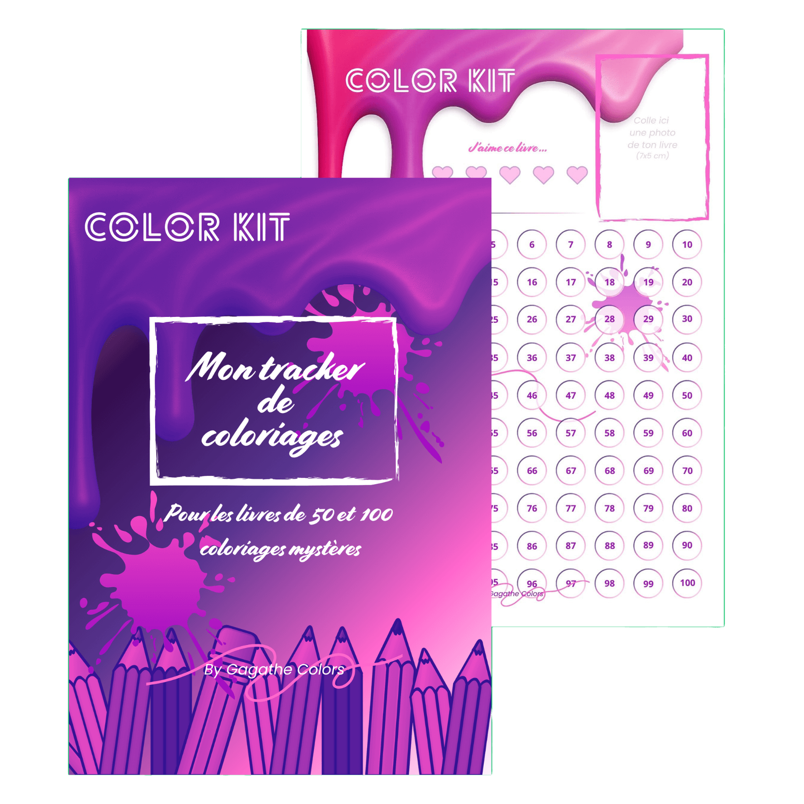

Trackers Color Kit
Découvre les modèles de trackers à télécharger et les livres disponibles sur Amazon.
Tracker marque-pages
40, 50 ou 100 cases
Le 2 en 1 qui te suivra dans n'importe quel livre de coloriage ! Suis ta progression et retrouve ta page en cours facilement.
Télécharger en Pdf

Carnet trackers
Carnet trackers
40, 50 ou 100 coloriages
Le carnet pour suivre tes coloriages mystères en un clin d’œil ! Pour les livres de 40, 50 ou 100 pages.
Shop sur Amazon